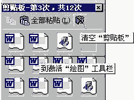

|
|
| 当前位置：电脑报电子版 > 1999 年 > 44 期 > 软件世界 > 使用Word 2000的剪贴板功能 |
| 《 使用Word 2000的剪贴板功能 》 |
| Windows95/98的剪贴板是一个专门用来暂时存储用户复制或剪切信息的工具。但这个剪贴板最大的缺点是只能保存一份信息，当第二次复制时就将第一次复制的内容顶替掉。这对多次复制信息后再粘贴到当前文档带来极大的不便，但在Word
2000中增强了剪贴板功能，给用户的复制、粘贴带来了极大的便利。 在Word 2000中的剪贴板同以往正常使用剪切或复制一样进行操作，但剪切或复制两次以上后，就会自动弹出如下图所示的剪贴板状况对话框（如图）。 经使用发现，Word 2000中的剪贴板有以下特点： 1． 复制两次以上后，剪贴板状况对话框自动弹出。 2．最多可以保存12次的复制内容。 3． 单击对话框上的“全部粘贴”，可以一次全部粘贴所有复制的内容。 4．要查看剪贴板中一项内容，将鼠标指针停留在该项目的图标之上，会自动显示复制的的内容，这方便了从所有保存的内容中任意选择粘贴。 5． 当不用剪贴板中的内容时，为了减少占用内存，点击对话框右上方的“关闭”，可以一次全部清空剪贴板中的内容。 （山东 冯玉国） |
| 下载本期推荐软件 | 页 首 |
| 《电脑报》版权所有，CPCW网站编辑部设计制作发布 |